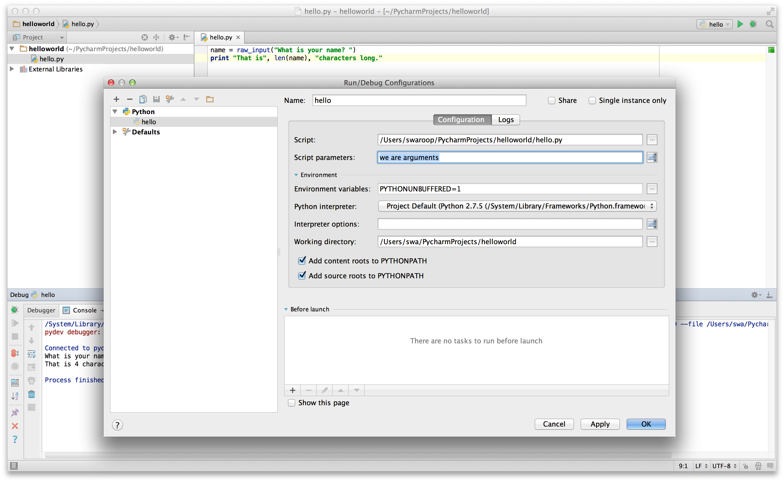

基础
只打印 hello world 是不够的，对吧？你想做更多的事情——你想接收一些输入，对其进行处理，然后得到一些输出。在 Python 中，我们可以使用常量和变量来实现这一点，在本章中我们还将学习一些其他概念。
注释
注释是 # 符号右边的任何文本，主要作为程序读者的笔记。
例如：
print('hello world') # 注意 print 是一个函数
或者：
# 注意 print 是一个函数
print('hello world')
在你的程序中尽可能多地使用有用的注释来：
- 解释假设
- 解释重要的决定
- 解释重要的细节
- 解释你试图解决的问题
- 解释你在程序中试图克服的问题等。
这对程序的读者很有用，因为他们可以轻松地理解程序在做什么。记住，那个人可能是六个月后的你自己！
字面常量
字面常量的例子包括数字 5、1.23，或字符串 'This is a string'、"It's a string!"。
它被称为字面量是因为它是字面的——你直接使用它的字面值。数字 2 始终代表它自己，没有其他含义——它是一个常量，因为它的值不能被改变。因此，所有这些都被称为字面常量。
数字
数字主要有两种类型——整数（integer）和浮点数（float）。
整数的一个例子是 2，它就是一个整数。
浮点数（简称 float）的例子有 3.23 和 52.3E-4。E 表示法表示 10 的幂。在这种情况下，52.3E-4 表示 52.3 * 10^-4。
给有经验的程序员的提示
没有单独的
long类型。int类型可以是任意大小的整数。
字符串
字符串是字符的序列。字符串基本上就是一堆文字。
在你编写的几乎每一个 Python 程序中都会用到字符串，所以请注意以下内容。
单引号
你可以使用单引号来指定字符串，例如 'Quote me on this'。
引号内的所有空白（即空格和制表符）都会原样保留。
双引号
双引号中的字符串与单引号中的字符串工作方式完全相同。例如 "What's your name?"。
三引号
你可以使用三引号——（""" 或 '''）来指定多行字符串。你可以在三引号内自由使用单引号和双引号。例如：
'''This is a multi-line string. This is the first line.
This is the second line.
"What's your name?," I asked.
He said "Bond, James Bond."
'''
字符串是不可变的
这意味着一旦你创建了一个字符串，你就不能更改它。虽然这看起来可能是一件坏事，但实际上并不是。我们将在后面的各种程序中看到为什么这不是一个限制。
给 C/C++ 程序员的提示
Python 中没有单独的
char数据类型。实际上并不需要它，我相信你不会想念它的。
给 Perl/PHP 程序员的提示
请记住，单引号字符串和双引号字符串是相同的——它们没有任何区别。
format 方法
有时我们可能想从其他信息构造字符串。这就是 format() 方法派上用场的地方。
将以下几行保存为文件 str_format.py：
age = 20
name = 'Swaroop'
print('{0} was {1} years old when he wrote this book'.format(name, age))
print('Why is {0} playing with that python?'.format(name))
输出：
$ python str_format.py
Swaroop was 20 years old when he wrote this book
Why is Swaroop playing with that python?
工作原理
字符串可以使用某些格式说明符，随后可以调用 format 方法，将这些格式说明符替换为 format 方法的相应参数。
观察第一个用法，我们使用 {0}，它对应变量 name，这是 format 方法的第一个参数。同样，第二个格式说明符是 {1}，对应 age，这是 format 方法的第二个参数。注意 Python 从 0 开始计数，这意味着第一个位置在索引 0 处，第二个位置在索引 1 处，依此类推。
请注意，我们也可以通过字符串拼接来实现同样的效果：
name + ' is ' + str(age) + ' years old'
但这要丑陋得多，而且更容易出错。其次，format 方法会自动完成到字符串的转换，而不需要像这种情况那样显式地转换。第三，使用 format 方法时，我们可以在不处理变量的情况下更改消息，反之亦然。
还要注意数字是可选的，所以你也可以这样写：
age = 20
name = 'Swaroop'
print('{} was {} years old when he wrote this book'.format(name, age))
print('Why is {} playing with that python?'.format(name))
这将产生与前一个程序完全相同的输出。
我们还可以给参数命名：
age = 20
name = 'Swaroop'
print('{name} was {age} years old when he wrote this book'.format(name=name, age=age))
print('Why is {name} playing with that python?'.format(name=name))
这将产生与前一个程序完全相同的输出。
Python 3.6 引入了一种更短的命名参数方式，称为"f-string"：
age = 20
name = 'Swaroop'
print(f'{name} was {age} years old when he wrote this book') # 注意字符串前面的 'f'
print(f'Why is {name} playing with that python?') # 注意字符串前面的 'f'
这将产生与前一个程序完全相同的输出。
Python 在 format 方法中所做的是将每个参数值替换到格式说明符的位置。还可以有更详细的格式规范，例如：
# 浮点数 '0.333' 的小数点（.）精度为 3
print('{0:.3f}'.format(1.0/3))
# 用下划线（_）填充，文本居中
# (^) 宽度为 11 '___hello___'
print('{0:_^11}'.format('hello'))
# 基于关键字 'Swaroop wrote A Byte of Python'
print('{name} wrote {book}'.format(name='Swaroop', book='A Byte of Python'))
输出：
0.333
___hello___
Swaroop wrote A Byte of Python
既然我们讨论了格式化，请注意 print 总是以一个不可见的"换行"字符（\n）结尾，因此重复调用 print 会每次打印在单独的一行上。要防止打印这个换行符，你可以指定它以空字符串 end：
print('a', end='')
print('b', end='')
输出是：
ab
或者你可以 end 用一个空格：
print('a', end=' ')
print('b', end=' ')
print('c')
输出是：
a b c
转义序列
假设你想创建一个包含单引号（'）的字符串，你该如何指定这个字符串？例如，字符串是 "What's your name?"。你不能指定 'What's your name?'，因为 Python 会困惑于字符串从哪里开始到哪里结束。所以，你必须指定这个单引号不表示字符串的结尾。这可以通过转义序列来实现。你将单引号指定为 \'：注意反斜杠。现在，你可以将字符串指定为 'What\'s your name?'。
指定这个特定字符串的另一种方法是 "What's your name?"，即使用双引号。同样，在双引号字符串中使用双引号本身时，你也需要使用转义序列。此外，你还需要使用转义序列 \\ 来表示反斜杠本身。
如果你想指定一个两行的字符串怎么办？一种方法是使用三引号字符串，如前面所示，或者你可以使用换行符的转义序列——\n 来表示新行的开始。例如：
'This is the first line\nThis is the second line'
另一个有用的转义序列是制表符：\t。还有更多转义序列，但我在这里只提到了最有用的几个。
需要注意的是，在字符串中，行末的一个反斜杠表示字符串在下一行继续，但不会添加换行符。例如：
"This is the first sentence. \
This is the second sentence."
等同于
"This is the first sentence. This is the second sentence."
原始字符串
如果你需要指定一些不处理特殊字符（如转义序列）的字符串，那么你需要通过在字符串前加上 r 或 R 来指定一个原始字符串。例如：
r"Newlines are indicated by \n"
给正则表达式用户的提示
在处理正则表达式时，始终使用原始字符串。否则，可能需要大量的反斜杠转义。例如，反向引用可以写为
'\\1'或r'\1'。
变量
只使用字面常量很快就会变得无聊——我们需要某种方式来存储任何信息并对其进行操作。这就是变量发挥作用的地方。变量正如其名——它们的值可以变化，即你可以使用变量存储任何东西。变量只是你计算机内存中存储信息的一部分。与字面常量不同，你需要某种方法来访问这些变量，因此你给它们起名字。
标识符命名
变量是标识符的例子。标识符是用来标识某样东西的名字。在命名标识符时，你需要遵循一些规则：
- 标识符的第一个字符必须是字母（大写 ASCII 或小写 ASCII 或 Unicode 字符）或下划线（
_）。 - 标识符名称的其余部分可以由字母（大写 ASCII 或小写 ASCII 或 Unicode 字符）、下划线（
_）或数字（0-9）组成。 - 标识符名称区分大小写。例如，
myname和myName是不相同的。注意前者是小写的n，后者是大写的N。 - 有效的标识符名称示例有
i、name_2_3。无效的标识符名称示例有2things、this is spaced out、my-name和>a1b2_c3。
数据类型
变量可以保存不同类型的值，称为数据类型。基本类型是数字和字符串，我们已经讨论过了。在后面的章节中，我们将看到如何使用 类 创建自己的类型。
对象
请记住，Python 将程序中使用的任何东西都称为对象。这是在一般意义上说的。我们不说"某个东西"，而是说"某个对象"。
给面向对象编程用户的提示：
Python 是强面向对象的语言，在这个意义上一切都是对象，包括数字、字符串和函数。
现在我们将看到如何将变量与字面常量一起使用。保存以下示例并运行程序。
如何编写 Python 程序
从现在开始，保存和运行 Python 程序的标准步骤如下：
对于 PyCharm
- 打开 PyCharm。
- 使用提到的文件名创建新文件。
- 输入示例中给出的程序代码。
- 右键点击并运行当前文件。
注意：当你需要提供命令行参数时，点击 Run -> Edit Configurations，在 Script parameters: 部分输入参数，然后点击 OK 按钮：

对于其他编辑器
- 打开你选择的编辑器。
- 输入示例中给出的程序代码。
- 使用提到的文件名保存为文件。
- 使用命令
python program.py运行解释器来执行程序。
示例：使用变量和字面常量
输入并运行以下程序：
# 文件名：var.py
i = 5
print(i)
i = i + 1
print(i)
s = '''This is a multi-line string.
This is the second line.'''
print(s)
输出：
5
6
This is a multi-line string.
This is the second line.
工作原理
这个程序是这样工作的。首先，我们使用赋值运算符（=）将字面常量值 5 赋给变量 i。这一行被称为语句，因为它声明了要执行的操作，在这种情况下，我们将变量名 i 与值 5 关联起来。接下来，我们使用 print 语句打印 i 的值，不出所料，它只是将变量的值打印到屏幕上。
然后我们将 i 中存储的值加 1，并将结果存回去。然后我们打印它，不出所料，我们得到了值 6。
同样，我们将字面字符串赋给变量 s，然后打印它。
给静态语言程序员的提示
变量只需赋值即可使用。不需要/不使用声明或数据类型定义。
逻辑行与物理行
物理行是你在编写程序时看到的内容。逻辑行是 Python 看作单个语句的内容。Python 隐式地假设每个物理行对应一个逻辑行。
逻辑行的一个例子是像 print('hello world') 这样的语句——如果它在单独的一行上（正如你在编辑器中看到的那样），那么它也对应一个物理行。
隐式地，Python 鼓励每行只写一条语句，这使得代码更具可读性。
如果你想在单个物理行上指定多个逻辑行，那么你必须使用分号（;）显式指定，分号表示逻辑行/语句的结束。例如：
i = 5
print(i)
实际上等同于
i = 5;
print(i);
也等同于
i = 5; print(i);
以及
i = 5; print(i)
但是，我强烈建议你坚持在每个物理行上最多只写一条逻辑行。关键是你永远不应该使用分号。事实上，我在 Python 程序中从未使用甚至见过分号。
有一种情况下这个概念真的很有用：如果你有一行很长的代码，你可以使用反斜杠将其分成多个物理行。这被称为显式行连接：
s = 'This is a string. \
This continues the string.'
print(s)
输出：
This is a string. This continues the string.
同样，
i = \
5
等同于
i = 5
有时候，有一种隐式的情况不需要使用反斜杠。这就是当逻辑行有开始括号、开始方括号或开始花括号但没有对应的结束符号时。这被称为隐式行连接。当我们在后面的章节中使用 list 编写程序时，你会看到它的实际应用。
缩进
空白在 Python 中很重要。实际上，行首的空白很重要。这被称为缩进。逻辑行开头的前导空白（空格和制表符）用于确定逻辑行的缩进级别，进而用于确定语句的分组。
这意味着属于同一组的语句必须具有相同的缩进。每个这样的语句集被称为一个代码块。我们将在后面的章节中看到代码块的重要性示例。
你需要记住的一件事是，错误的缩进会导致错误。例如：
i = 5
# 下面有错误！注意行首有一个空格
print('Value is', i)
print('I repeat, the value is', i)
运行这个程序时，你会得到以下错误：
File "whitespace.py", line 3
print('Value is', i)
^
IndentationError: unexpected indent
注意第二行的开头有一个空格。Python 指示的错误告诉我们程序的语法无效，即程序没有正确编写。这意味着你不能随意开始新的语句块（当然，你一直使用的默认主块除外）。可以使用新代码块的情况将在后面的章节中详细说明，例如控制流。
如何缩进
使用四个空格进行缩进。这是 Python 语言的官方推荐。好的编辑器会自动为你完成。确保你使用一致数量的空格进行缩进，否则你的程序将无法运行或会出现意外行为。
给静态语言程序员的提示
Python 将始终使用缩进来表示代码块，永远不会使用花括号。运行
from __future__ import braces来了解更多。
总结
现在我们已经了解了许多细节，可以继续学习更有趣的内容，比如控制流语句了。请确保你已经熟悉了本章所读的内容。